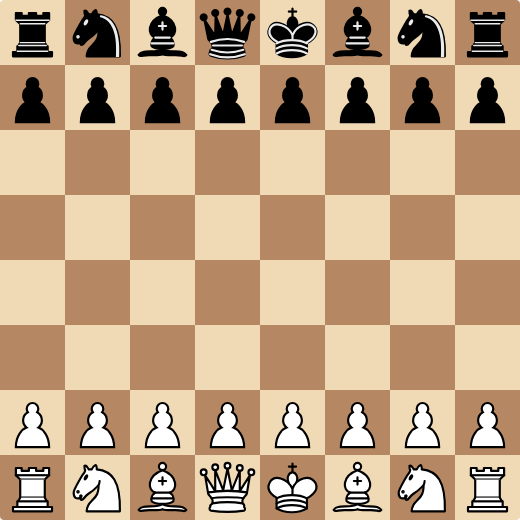

What is this?
Back, what was supposed to be a month but became 4 or 5 due to procrastination, I decided I wanted to make chess - program the full game from scratch, and be proud of it. And then, I would make an opponent that would be able to play against you, and hopefully, win every time.
The first part of this journey was to program the game itself. On the Chess Programming Wiki (CPW), it says that the first step to programming a chess engine is to have a fully working and bug-free implementation of the full game:
The very first step to writing a chess engine is to write a complete, bug free board representation that knows every rule of chess. While this can sometimes be a pain, especially implementing the more complicated rules such as castling and repetition draws, it is the backbone of the chess engine, and your engine will not get far without it.
The problem with this came when I found there were an extreme lack of resources present for this task, and it quickly became apparent that this would be pretty difficult to achieve. And a month later, it was finished. I was supposed to spend a week or so, documenting my experience, but I forgot and pushed it to the side - eventually, I forgot about it, but now I'm writing this guide so that it's just that little bit easier for anyone else who was at the start of the same path I walked.
About this project
This project will use code written in C#, as this is what my move generator was written in, originally. Hopefully, the code should be self-explanatory, and I'll do my best to explain alongside the code samples presented throughout this book.
If there are any issues, feature requests, or contributions, feel free to list them in the issues tab of this repository here.
Thank you for reading! ‚ù§Ô∏èüéâ
What is Chess?
Chess is a two-player board game, simulating a battle between two kingdoms, where both players take turns moving pieces on the board with the objective of putting their opponent's king in a position where they have no escape and will be taken on the following move. It is one of the oldest and most popular games to date, with one of the first openings being the Ponziani Opening, having been first discussed in chess literature no later than 1497.
The game takes place on an 8-by-8 board where each player controls 16 pieces, arranged as seen below:

Vocabulary about Chess Boards
Before I give an overview of all the pieces and their behaviour, note these terms about chess boards:
-
file: a vertical line of squares on the board.
- The furthest on the left is labelled file A,
- The furthest on the right is labelled file H.
-
rank: a horizontal line of squares on the board.
- The closest to White's perspective is labelled rank 1
- The furthest from White's perspective is labelled rank 8.
Squares are also represented as [file][rank], so e4 means 5th file and 4th rank.The 5 comes from 'e' being the 5th letter of the alphabet.
For example, in the diagram below, the square highlighted with red is F3, and the square highlighted with green is B5:

Rooks
Rooks are the castle-looking pieces, and can usually be found in all four corners of the board, when pieces are arranged in the starting position:


They move orthogonally (horizontally and vertically) in all four directions for as many squares as possible, only stopped by another piece on the board, as you can see below:

Rooks can only move up until a friendly piece and only onto an enemy piece - they cannot jump over them. They are worth five points (5 times as good as a pawn) and each player gets two of them.
Bishops
Much like a rook, they move in straight lines, except this time it's diagonally. They are found beside the king and queen on the board.

And, much like a rook, they also cannot jump over pieces.

In Chess, a bishop is usually considered to be worth three points (3 times as good as a pawn) and each player gets two of them.
Queens
A queen is a combination of a rook and a bishop, and it is the strongest piece on the board, being worth 9 points (5 + 3 + 1 extra for style points).

Their movements are, as described earlier, a combination of a rook's and a bishop's:

Each player gets only one of these, making it an extremely valuable asset, and usually considered a complete loss for less advanced players if their queen gets taken.
Knights
A knight is a unique piece in the chess world. It is worth three points and each player gets two of them.

For a start, it's the only piece that can jump over other pieces, and its path of movement is also not in a straight line like all the other pieces. Commonly described as an L-shape, the knight moves two squares orthogonally, then one square perpendicular to the chosen direction.
For example, two squares left and one square up or down:

And here are all the moves that can be made with the directions I explained earlier:

The best part about knights is that they always move in these paths, meaning we can make a small lookup table for all the possible moves that can be easily generated.
King
The king is the weakest piece in the whole army, but you must protect him or you will lose the game. He doesn't have a material worth, because for him to be captured, an illegal move must be played.


He moves in every direction like the queen, but only moves one space, instead of to the end of the board:

Kings cannot play any moves where they will be taken on the next move, meaning they cannot step into any lines of attack:

And they cannot capture protected pieces:

To explain, if White's king captures Black's rook, Black's bishop would take White's king, which would be an illegal move.
Castling
Kings can perform a special move with the rook called "castling". This is the only move in chess involving two pieces and it's where a king is moved two squares toward a rook on the same rank:
Then moving the rook to the square the king passed over:
This is usually a defensive move that is played in the opening.
Castling can only be performed if certain requirements are all met:
- There are no pieces between the king and the rook being castled with.
- The king, and rook being castled with, must not have moved from their starting squares.
- The king must not be in check (threatened by an opposing piece).
- None of the squares the king passes through are under attack.
Pawns
Pawns are a special piece in Chess. You get the most of them compared to any piece, and they line the second and seventh ranks of the board.


At first, you might look at these little soldiers, worth a measly one point, and not think much of them, but they possess a few unusual traits. For example, they don't capture on the same squares they move on, and they can upgrade to other pieces.
Movement
Pawns move one square forward. That's literally it.

They also have the option to move two squares on their first move, but because pawns cannot jump over other pieces, they cannot move two squares if the space directly in front is blocked by any another piece.
They also cannot move two spaces if the square they land on is blocked by any another piece.

Captures
Pawn captures are a bit weird: they don't capture on the same squares they move. Here, their capture squares are marked in red, whereas their movement squares are marked in green:

Here, you can see they capture one square up and one square either left or right of the square the pawn resides on.
Promotions
When a pawn reaches the opposite rank of the board, it has the ability to promote to any other king besides a king: there can never be more than one king on the board at one time. This means they can become a knight, bishop, rook, or usually the most common (because it is the most valuable) option: the queen.
When promoting, you remove the pawn (removing one point from the promoting player's material count) and add back the selected piece (adding however many points the final piece is worth) on the square the pawn landed on.
En-Passant
En-passant is French for "in passing" and it lets a pawn capture an opponent's pawn on the same rank and an adjacent file. This is only available for one move after a pawn moves two squares on its first move, and it allows that pawn moved to be taken as if it moved one space.
If that all sounds terribly confusing, I'll show some images.
Take this position for example:

White moves their pawn two squares to e4:

Black now has the opportunity for en-passant:
And this is what it looks like after Black plays the en-passant move:

This move is the same as if the pawn moved one square forward for its turn instead of two:
The pawn will end up in the same position.
If Black chooses to move his king, instead of capturing White's pawn through en-passant, Black cannot play en-passant on their next turn.
Those are all of the movements of all the pieces in Chess. Let me know if my guide was useful, or where it can be improved, by filing an issue here.
Board Representation
So, now that you're familiar with the game of Chess, let's take a look again at what a chess board looks like.
Unfortunately, it's not really practical to just store a picture of the board in memory, so we need to come up with a more clever solution to representing this chess board.
Mailbox
The first method to representing the pieces on a chess board is what the chess world calls a "mailbox", which is an array of values representing all the different possible states a square can be. This can be a 1D or 2D array and usually consists of a Piece enum of all 13 states: 12 pieces and a final enum for an empty square.
public enum Piece
{
WhitePawn, BlackPawn,
WhiteKnight, BlackKnight,
WhiteBishop, BlackBishop,
WhiteRook, BlackRook,
WhiteQueen, BlackQueen,
WhiteKing, BlackKing,
Empty
}
They can be in any order, but having an order like the example shown allows you to get the type of a piece using a right-shift of 1, and the colour of a piece using a bitwise AND of 1.
Using a 1D Array
Using a 1D array, this is how we initiate the array:
Piece[] Mailbox = new Piece[64];
However, there is a problem: when you initiate an array of enums in C#, it fills it with zeroes or the zero-equivalent of the enum (the enum attribute with a value of 0) for integer types. With the way, we've initiated it, because Piece.WhitePawn is the zero-equivalent enum, it will fill the array with a bunch of white pawns on all the squares.
So, if you were to display the board state, it would look like this:

This is clearly not what an empty board looks like, so we have to correct it by filling the array with the equivalent of empty squares: Piece.Empty:
Array.Fill(Mailbox, Piece.Empty);
And now, if we display our board, we get a blank board:

Never has nothing been so appealing.
Using a 2D array
Again, using a 2D array is much like the 1D array: you initiate the array:
Piece[,] Mailbox2D = new Piece[8, 8];
Then fill it with pieces:
for (int i = 0; i < 8; i++)
{
for (int j = 0; j < 8; j++)
{
Mailbox2D[i, j] = Piece.Empty();
}
}
There isn't really much else to say, other than 2D arrays are slower than a 1D array and that you would have to split a single index into two indexes with a division and modulus. Although, it is more intuitive because the board is an 8x8 grid, so it makes sense to store it in an 8x8 "memory grid", otherwise known as a 2D array.
However, there's a much better option that removes the need for anything to do with arrays: bitboards.
Using Bitboards - The Best Option
The term "bitboard" refers to a number where the bits in its binary representation encode information about a game board's state. In English, that's basically a binary number where the bits represent something about the board. In the context of Chess, this could be lines of attack, pieces on the board, where you can and cannot castle, etc. Bitboards are typically used when there are two states for something: it's there, and it's not.
For example, take this position here:
If I asked you where all of White's piece are, you'd probably describe something that amounts to this:
On each square, there can either be a white piece, or there can't be. If we assign 1 to "there is a piece here", and 0 to "there isn't a piece here", we get something like this:
0 0 0 0 0 0 0 0
0 0 0 0 0 0 0 0
0 0 0 0 0 0 0 0
0 0 1 0 0 0 0 0
0 1 0 1 0 0 0 1
1 0 0 1 0 0 1 0
0 0 0 0 0 1 0 0
0 0 0 0 0 1 0 0
A grid of zeroes and ones representing where all of White's pieces are. With these zeroes and ones, we can pack them with binary:
# 8th row, 7th row, 6th row, you get the point...
0b 00000000 00000000 00000000 00100000 01010001 10010010 00000100 00000100
Computer Architecture
Another benefit to our binary approach is the fact that pretty much all CPU's have architecture that lets them operate on data in 64-bit chunks at a time with incredible speed. As in multiple billions of times a second, incredible speed. We can leverage this by using bitboards for our Chess game, as we can unlock ridiculously fast speeds with this method.
My Decision - and Everyone Else's
The consensus in the Stockfish Discord server is that the best approach is a bitboard implementation combined with a 1-dimensional array, which serves as our mailbox. You might be wondering, considering what I said earlier, "Why are we using an array if bitboards are quicker?" It's because, this time, it's not used for move generation - it's used for piece lookup. We keep an array of 64 "pieces" that let us know what's on a given square. This is useful, because if you wanted to know what piece was on A1, you only have to access the part of an array that A1 points to, instead of going through all the bitboards and checking to see if any of the bits intersect.
For information on how I implemented my bitboards (and how I show them here), turn to the following page.
Bitboard Representation
This section is under construction... ⚠️
Contributors
Here is a list of names, GitHub accounts and ways people have helped me to complete this project: